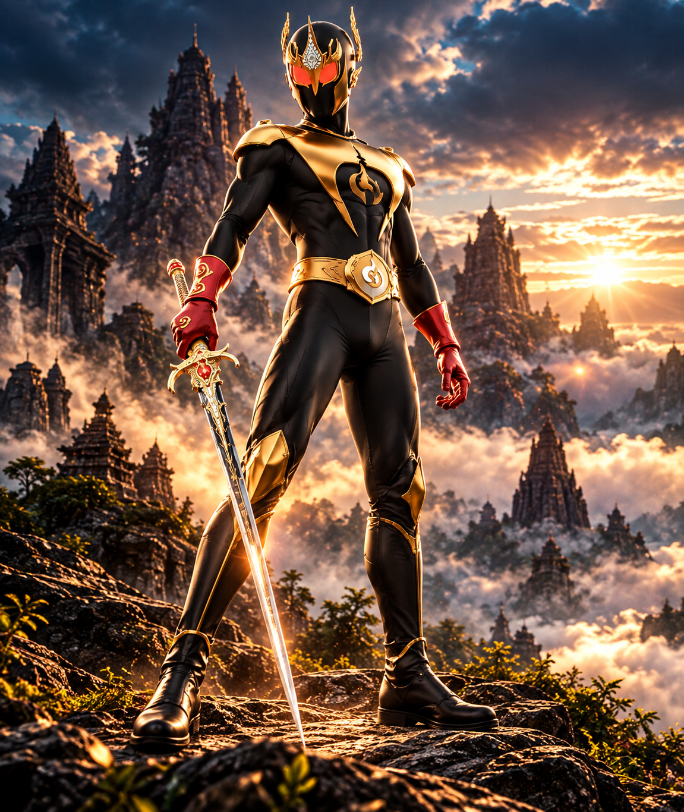
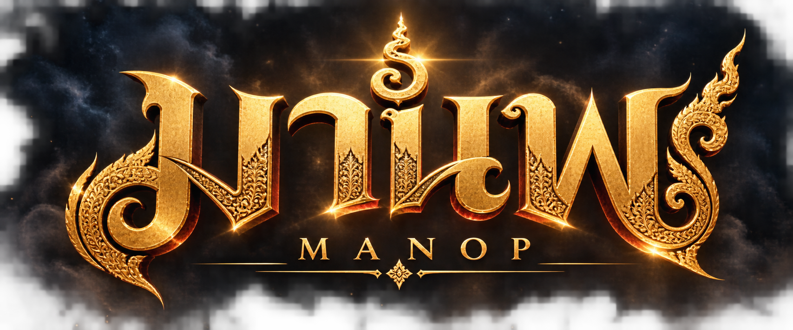
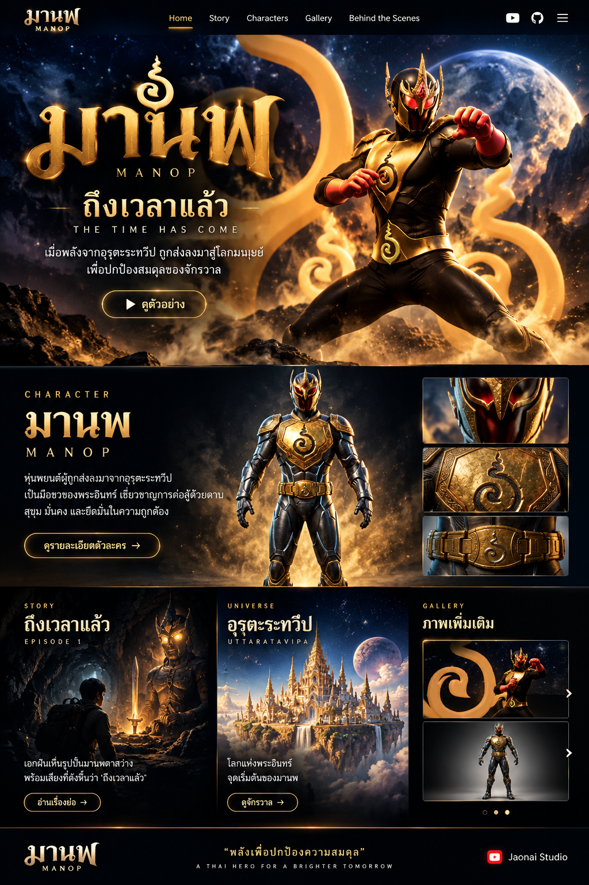
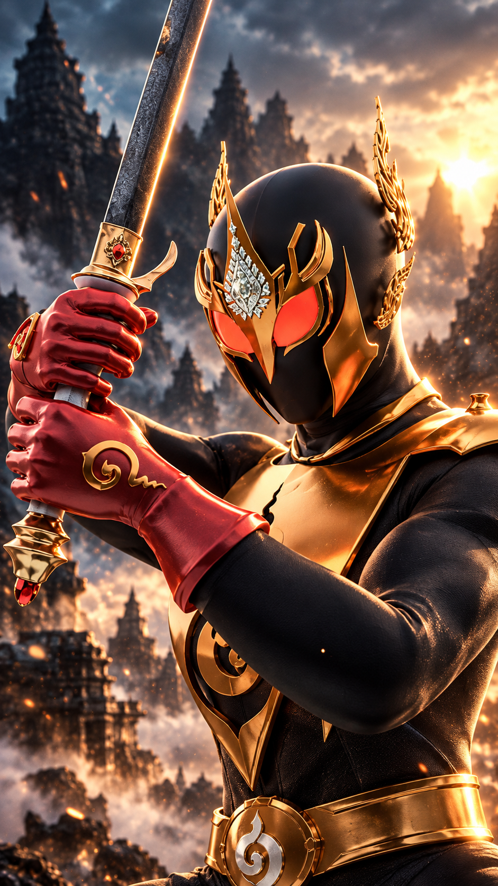
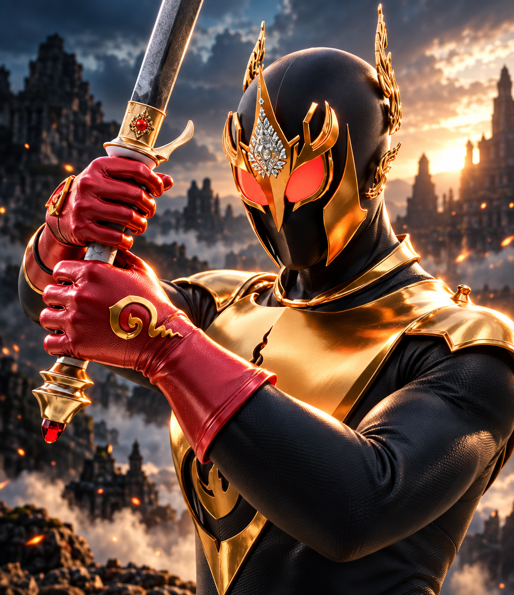
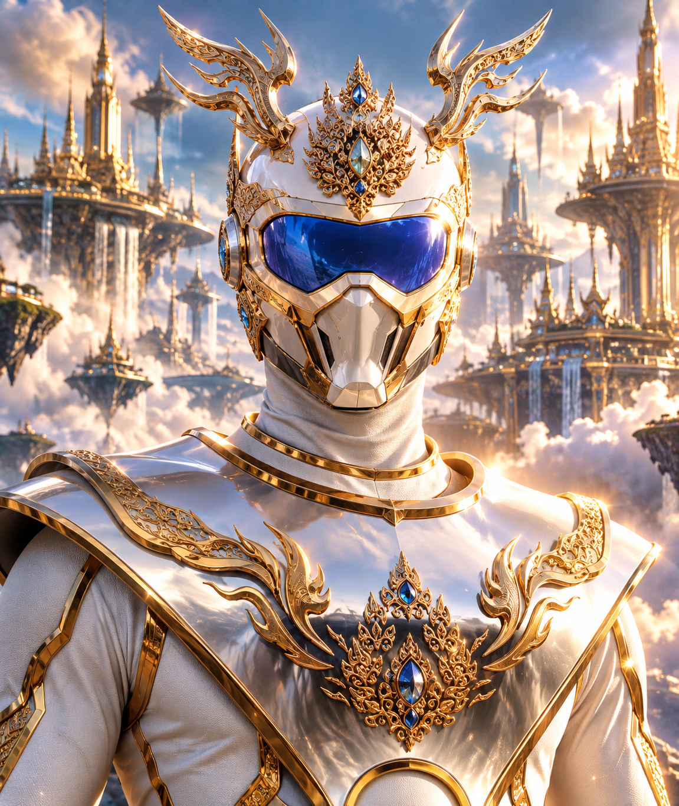

มานพ
มือขวาของพระอินทร์ นักดาบผู้สุขุม หนักแน่น และแม่นยำ หุ่นพยนต์ที่ถูกส่งลงมาช่วยโลกมนุษย์

THAI SCI‑FI · SUPERHERO · FOLKLORE
เมื่อภัยจากต่างพิภพคืบคลานสู่ชมพูทวีป “มานพ” หุ่นพยนต์นักดาบผู้สุขุม ถูกส่งลงมายังโลกมนุษย์ และเสียงเรียกในความฝันกำลังปลุกตำนานที่ถูกลืมให้ตื่นขึ้นอีกครั้ง

EPISODE 01 · THE CALL
เอกได้ยินเสียงลึกลับในความฝัน ก่อนรูปปั้นนักรบจะลืมตาขึ้น ชี้ดาบตรงมาที่เขา และกล่าวเพียงว่า “ถึงเวลาแล้ว”
ร่องรอยจากความฝันนำไปสู่วัดชนบทและพระชราผู้ดูแลรูปปั้นมานพ ขณะเดียวกัน เหตุการณ์จากดาวอุรุตะระทวีปกำลังส่งผลสะเทือนมาถึงโลกมนุษย์


CHARACTERS

มือขวาของพระอินทร์ นักดาบผู้สุขุม หนักแน่น และแม่นยำ หุ่นพยนต์ที่ถูกส่งลงมาช่วยโลกมนุษย์

มือซ้ายของพระอินทร์ พี่น้องร่วมสาบานของมานพ เชี่ยวชาญเวทมนตร์และมีปัญญาเฉียบแหลม
น้องชายของพระอินทร์ ผู้ไม่พอใจการประสูติที่ชมพูทวีป และนำเชื้อร้ายลงมาปล่อยบนโลก
THE UNIVERSE
จักรวาลมานพผสานไซไฟ ซูเปอร์ฮีโร่ สถาปัตยกรรมและความเชื่อไทย เข้ากับบรรยากาศผีพื้นบ้าน จากนครของพระอินทร์ สู่ถ้ำ วัด และหมู่บ้านชนบทที่ดูสงบแต่ซ่อนสิ่งเหนือธรรมชาติเอาไว้
BEHIND THE SCENES
โปรเจกต์มานพกำลังพัฒนาตัวละคร เกราะ การเคลื่อนไหว และฉากต่อสู้ โดยเน้นบุคลิกการต่อสู้ของมานพให้สุขุม หนักแน่น และมีพลัง การเคลื่อนไหวถูกออกแบบตั้งแต่ฐานเท้า การถ่ายน้ำหนัก สะโพก ลำตัว ไหล่ ไปจนถึงวิถีดาบและจังหวะหยุดหลังการโจมตี
พัฒนามานพและชุดเกราะไทยร่วมสมัยสำหรับงานภาพยนตร์ 3D
พัฒนา Retarget, Sequencer, Blend และ Control Rig เพื่อสร้างคอมโบที่ต่อเนื่อง
สร้างโลกที่เชื่อมสวรรค์ไซไฟเข้ากับวัดและชนบทไทย